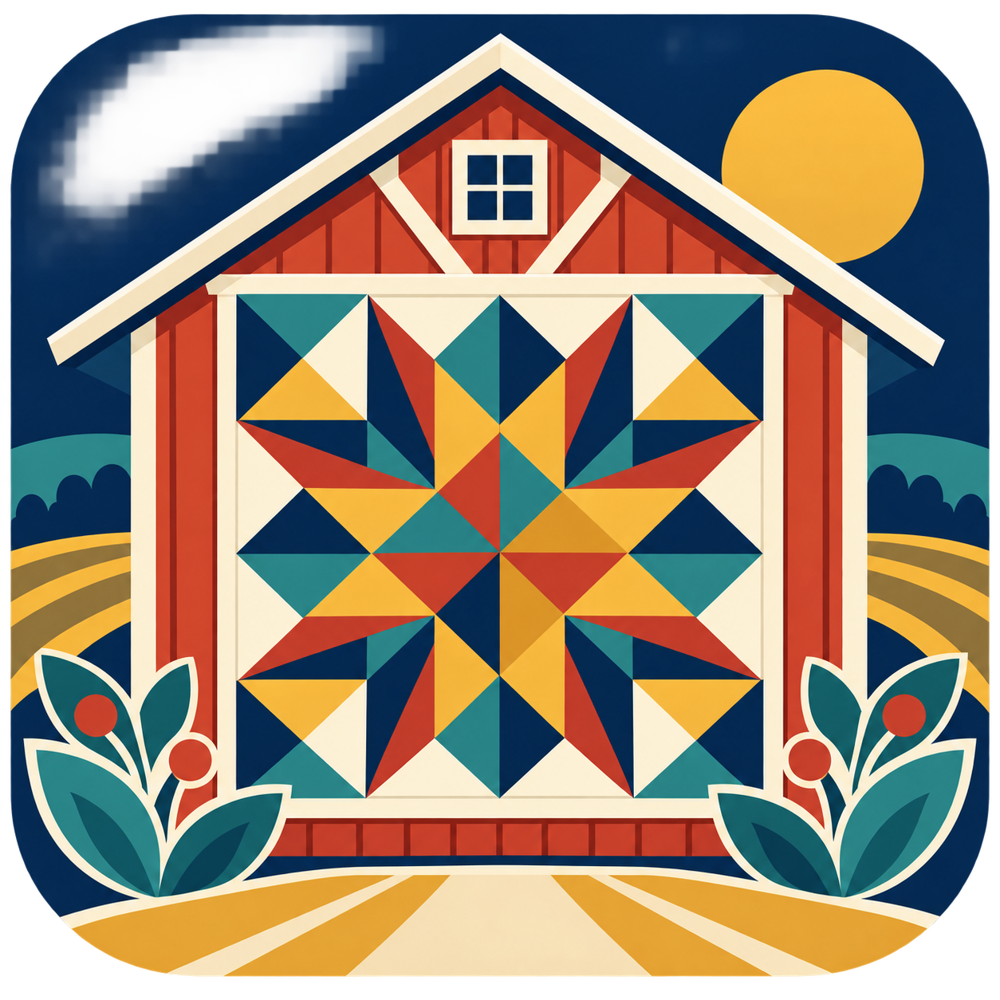
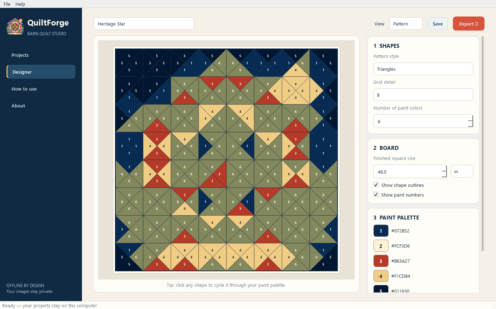

Photo to pattern
Import JPG, PNG, WebP, BMP, or TIFF images and create paintable blocks, triangles, or diamonds.

QuiltForgeBarn Quilt StudioDESIGNED FOR WINDOWS 10 & 11
QuiltForge transforms photos into clean geometric shapes, a practical paint palette, and a numbered build guide—without uploading your images anywhere.

MADE FOR THE WORKSHOP
Import JPG, PNG, WebP, BMP, or TIFF images and create paintable blocks, triangles, or diamonds.
Choose 2–12 paint colors, replace a color everywhere, or click individual shapes to fine-tune the design.
Enter the finished board size and receive exact grid spacing and layout marks in inches or centimeters.
Print a numbered PDF build guide or export crisp PNG and SVG artwork for sharing and resizing.
Every project autosaves locally and appears on the welcome screen so it is easy to pick up where you left off.
No account, cloud service, or internet connection is needed. Your personal images stay on your computer.
A SIMPLE WORKFLOW
Start simple, then add detail only where the design needs it. QuiltForge keeps the process visual and reversible.
Pick a clear photo with bold shapes and good contrast.
Use blocks, triangles, or traditional diamond forms.
Set the grid, paint count, board size, and individual shapes.
Export the numbered PDF and take it straight to the workshop.
QUILTFORGE 1.0
Install on any 64-bit Windows 10 or Windows 11 computer. The installer creates Start menu shortcuts and handles .qforge project files.
ABOUT THE PROJECT
QuiltForge was created to remove the guesswork between seeing an inspiring image and laying out a barn quilt that can be measured, taped, and painted by hand.
Made by Zach Skeens
In partnership with ITSZ Studios
Maintained by ITSolutions.Digital